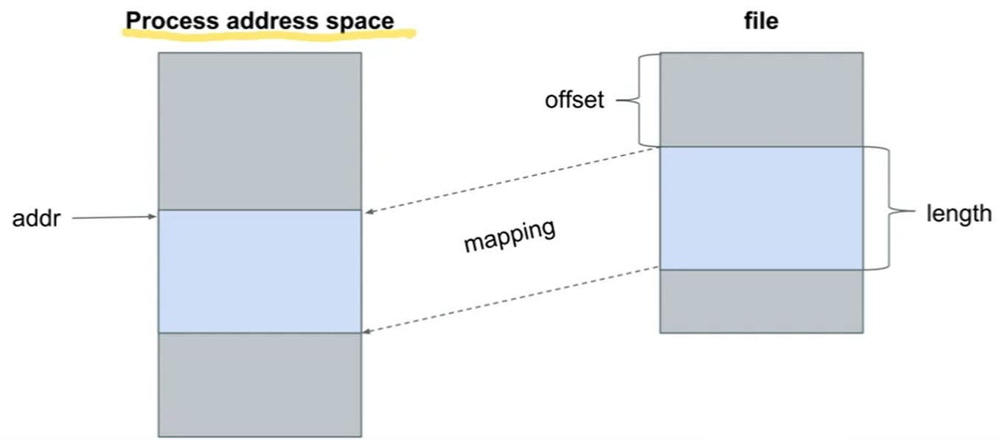
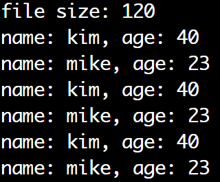

mmap()
Map a file on memory

- Process address space: 프로세스 주소 공간
프로세스는 자신만의 가상 주소 공간(Virtual Address Space)를 가지고 있다고 생각하고 동작 - mmap()은 특정 파일 내용 일부를 프로세스 주소 공간에 매핑함!
- Originally, file I/O는 FILE* API 혹은 저수준 I/O systemcall 사용
- 당연히 메모리상에 매핑 시키면, pointer로 왔다갔다 접근하면 되어서 빠름
- dev file을 매핑 시키면, Memory Mapped I/O
- 파일을 메모리에을 매핑 시키면, 자원 공유 가능!
mmap():2
#include <sys/mman.h>
void *mmap(void *addr, size_t length, int prot, int flags, int fd, off_t offset);
- 기능: fd의 파일을 매핑 시킴
| return | value |
| 성공 | Mapping된 주소 |
| 실패 | MAP_FAILED |
| parameter | Description |
| *addr | 매핑이 될 주소(시작 주소), 보통 강제성 없이 hint로 줌 |
| length | 매핑할 길이 |
| prot | PROT_EXEC: 페이지 실행 用 PROT_READ: 페이지 읽기 用 PROT_WRITE: 페이지 쓰기 用 PROT_NONE: 페이지는 액세스 되지 않는다. |
| flags | MAP_SHARED: P1과 P2가 동시에 매핑한다고 할 때, Update를 서로가 알 수 있으며 파일에도 적용 됨(msync()의 사용이 요구됨) MAP_SHARED_VALIDATE: MAP_SHARED에서 flags 의 알려지지 않은 flags를 무시하는 것만 제외하고는 MAP_SHARED와 동일 MAP_PRIVATE: P1과 P2가 동시에 매핑한다고 할 때, Update를 서로가 알 수 없으며 파일에 전달되지 않는다. MAP_FIXED:addr을 힌트로써 interpret하지 마라. 그 주소로 정확하게 매핑해라. MAP_ANONYMOUS: 매핑이 어떠한 파일에 의해 지원되지 않는다. Zero로 초기화된다. fd는 무시된다. 더 많은 내용은 man page참고 |
| fd | 매핑 시킬 파일의 fd |
| offset | Page의 배수 |
munmap():2
#include <sys/mman.h>
int munmap(void *addr, size_t length);
- 기능: mmap()을 통해 매핑된 어드레스 해제, 맵 언맵
| return | value |
| 성공 | 0 |
| 실패 | -1 |
| parameter | Description |
| addr | mapped address |
| length | 해제할 length |
Example 1. mmap_basic.c
#include <stdio.h>
#include <stdlib.h>
#include <string.h>
#include <sys/mman.h>
#include <sys/types.h>
#include <sys/stat.h>
#include <fcntl.h>
#include <unistd.h>
typedef struct{
char name[16];
int age;
}PERSON;
static int write_info(PERSON *p){
int fd;
ssize_t ret;
fd=open("person_info", O_CREAT | O_WRONLY | O_APPEND, 0644);
if(fd==-1){
perror("open() fail\n");
return -1;
}
ret=write(fd, p, sizeof(PERSON));
if(ret==-1){
perror("write() fail\n");
close(fd);
return -1;
} else if(ret != sizeof(PERSON)){
perror("write() was written partially\n");
close(fd);
return -1;
}
close(fd);
return 0;
}
static int dump_info(void){
// 1. Open file as FD
int fd;
struct stat sb;
PERSON *p;
int i;
fd=open("person_info", O_RDONLY);
if(fd==-1){
perror("open() fail\n");
return -1;
}
// 2. mmap을 통해 얼마나 매핑할 것 인지 알아야하는데, 이를 위해 파일의 크기를 얻는다.
if(fstat(fd,&sb)==-1){
printf("stat() fail\n");
close(fd);
return -1;
}
/*
* 3. struct stat의 st_size 멤버는 파일의 사이즈
* 4. st_size만큼 length를 요구한다
* 5. offset은 파일의 처음부터 읽어올 것 이기 때문에 0
*/
p=mmap(NULL, sb.st_size, PROT_READ, MAP_SHARED, fd, 0);
if(p==MAP_FAILED){
printf("mmap() fail\n");
close(fd);
return -1;
}
// Now P is starting point at the file
printf("file size: %ld\n",sb.st_size);
for(i=0; i< sb.st_size / sizeof(PERSON); i++){
printf("name: %s, age: %d\n",p[i].name, p[i].age);
}
close(fd);
munmap(p,sb.st_size);
return 0;
}
int main(int argc, char *argv[]){
PERSON persons[]={
{"kim", 40},
{"mike", 23}
};
write_info(&persons[0]);
write_info(&persons[1]);
dump_info();
return 0;
}

- mmap의 length는 파일의 사이즈로 가져온다.
- 파일의 사이즈는 stat()으로 가져옴